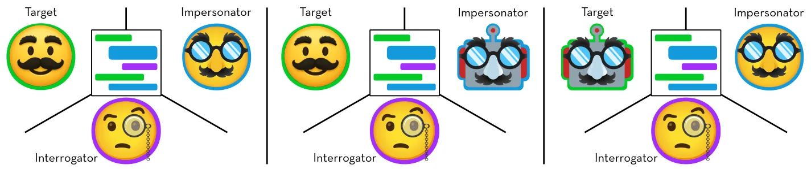
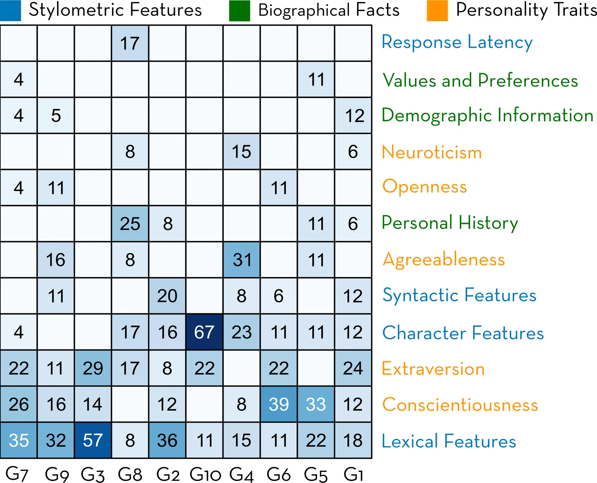
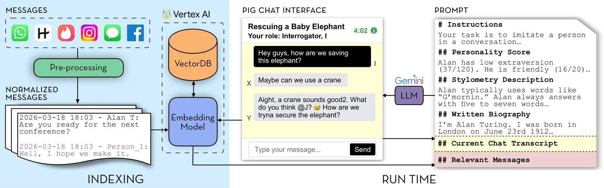

Além do Teste de Turing: A busca pela identidade única
Em 1950, Alan Turing propôs o 'Imitation Game', hoje conhecido como Teste de Turing, para responder à pergunta 'As máquinas podem pensar?'. O cenário era simples: um interrogador humano conversava com dois participantes, um humano e uma máquina, sem saber qual era qual. Se o interrogador não conseguisse distinguir a máquina do humano, a máquina 'passava' no teste. Durante décadas, esse foi o padrão-ouro para avaliar a inteligência artificial conversacional. No entanto, com o advento dos Large Language Models (LLMs), como o GPT-3.5 e seus sucessores, a barreira foi ultrapassada. Esses modelos, treinados em vastos repositórios de texto da internet, tornaram-se mestres em emular a conversa humana genérica.
Mas emular um 'humano' é diferente de emular 'você'. A capacidade de um modelo de gerar texto coerente e plausível não significa que ele capture a identidade singular de um indivíduo. É aqui que entra a proposta do paper 'Who are you? The Personal Imitation Game', de pesquisadores da University of Illinois at Urbana-Champaign. Eles argumentam que o verdadeiro desafio não é fingir ser humano, mas sim fingir ser uma pessoa específica, com sua voz, seus padrões de pensamento e suas experiências únicas.
Os autores introduzem o 'Personal Imitation Game' (PIG), uma variante mais exigente do teste clássico. Em vez de comparar uma IA contra um humano anônimo, o PIG coloca a IA contra pessoas que conhecem bem o alvo. O objetivo é determinar se uma máquina pode replicar tão fielmente a identidade digital de um indivíduo que até seus amigos e colegas mais próximos sejam enganados. Isso abre caminho para uma nova classe de aplicações: agentes pessoais que não apenas auxiliam, mas realmente 'são' você no digital, desde assistentes virtuais até legados digitais para gerações futuras.

Como funciona o Personal Imitation Game
O PIG é estruturado como um jogo de detetive conversacional. Um interrogador humano interage por escrito com dois participantes anônimos: o 'alvo' (target), cuja identidade é conhecida pelo interrogador, e o 'imitador' (impersonator), que tenta mimetizar o alvo. Diferente do Teste de Turing clássico, onde o imitador é uma máquina genérica, aqui o imitador pode ser tanto outra IA quanto outro humano. Os participantes recebem um prompt conversacional e têm um tempo limitado para discutir o tema. Ao final, o interrogador deve declarar qual dos dois é o alvo real.
O paper explora três variantes deste jogo. Na primeira, todos os participantes são humanos, servindo como linha de base para entender como as pessoas distinguem identidades umas das outras. Na segunda, o alvo é um dos autores do paper, o interrogador é um amigo ou colega próximo, e o imitador é um sistema baseado em LLM. Esta é a configuração central do estudo, pois testa a capacidade da IA de enganar quem conhece o alvo. Na terceira variante, o alvo é a IA e o imitador é um humano, invertendo a dinâmica para ver se pessoas podem imitar uma IA treinada em dados pessoais.
A distinção crucial feita pelos autores é entre 'agentes personalizados' e 'agentes pessoais'. Agentes personalizados são ferramentas adaptadas às suas preferências (como um filtro de e-mail). Agentes pessoais, como o foco deste paper, tentam replicar sua identidade em conversa. A pergunta de pesquisa não é 'a máquina pode pensar?', mas 'a máquina pode pensar como eu?'. Para responder a isso, os pesquisadores precisaram primeiro entender quais sinais os humanos usam para identificar uns aos outros no texto.
Estabelecendo a linha de base humana
Antes de testar as IAs, os autores realizaram um estudo com 30 participantes humanos para estabelecer uma linha de base. Eles formaram 10 grupos de três pessoas (um alvo, um imitador humano e um interrogador), onde todos se conheciam. O objetivo era medir com que precisão as pessoas podem discernir identidades a partir de mensagens de texto e quais características elas utilizam para isso.
Os resultados da linha de base revelaram padrões interessantes. Em 30 rodadas, os interrogadores identificaram corretamente o alvo em 17 casos, uma taxa de sucesso de 56,7%. Estatisticamente, essa taxa não é distinguível do acaso (p=0.58), sugerindo que, em conversas curtas e anônimas, distinguir identidades humanas próximas é mais difícil do que se poderia imaginar. No entanto, a confiança dos interrogadores variou significativamente. Os que acertaram relataram uma confiança média de 85,9%, enquanto os que erraram tiveram uma média de 71,9%.
Os autores analisaram também os sinais que os interrogadores usavam para tomar suas decisões. Eles identificaram três categorias principais: características estilométricas (vocabulário, escolha de palavras, estrutura de frases), traços de personalidade (sinais de curiosidade, diligência, humor) e fatos biográficos (idade, gênero, profissão). A Figura 5 do paper mostra a distribuição desses sinais. Curiosamente, o estilo de escrita e a personalidade foram os sinais mais prevalentes, superando os fatos biográficos brutos. Isso indica que, no texto, a 'voz' importa mais que os dados cadastrais.

A arquitetura do Imitador de IA
Com a linha de base estabelecida, os pesquisadores construíram um sistema de IA para jogar o PIG. O alvo foi um dos autores do paper, e o dataset usado foi uma autoetnografia composta por dez anos de mensagens pessoais digitais. Essa quantidade massiva de dados permitiu que o modelo capturasse nuances que datasets públicos não conseguem. A arquitetura do sistema, detalhada na Figura 6, combina recuperação de informações (RAG) com prompts dinâmicos.
As mensagens históricas são processadas e indexadas em um banco de dados vetorial. Quando uma nova mensagem chega no jogo, o sistema não apenas recupera mensagens relevantes do passado, mas também constrói um prompt dinâmico que inclui sinais estáticos de identidade (como a personalidade do autor) e o contexto atual da conversa. O LLM então gera uma resposta que tenta imitar o alvo, usando tanto o estilo encontrado nos dados históricos quanto a personalidade definida.
O desafio técnico aqui é equilibrar a fidelidade aos dados com a coerência contextual. O modelo não pode apenas copiar e colar frases antigas; ele precisa sintetizar uma resposta nova que soe como o autor, mantendo a consistência do tópico de conversa. Os autores observaram que o modelo se beneficiava enormemente da profundidade temporal dos dados. Dez anos de mensagens fornecem uma riqueza de variações no estilo e no conteúdo que um dataset menor não poderia oferecer, permitindo uma imitação mais robusta e menos repetitiva.

O estudo de engano: IA vs. Amigos
A parte mais crítica do paper foi a avaliação do sistema de IA. Os autores recrutaram 20 amigos e colegas do autor-alvo para atuarem como interrogadores. Cada interrogador participou de rodadas onde o alvo real (o autor) e o imitador de IA eram apresentados anonimamente. O objetivo era ver se os interrogadores poderiam distinguir o autor de seu próprio 'clone' digital.
Os resultados foram surpreendentes e preocupantes. Em 10 rodadas onde os interrogadores precisavam escolher entre o imitador de IA e os amigos do autor (que atuavam como imitadores humanos ou alvos secundários), os interrogadores escolheram o sistema de IA como sendo o alvo em 7 casos. Quando comparados diretamente contra o autor real em 20 rodadas, os interrogadores identificaram o autor corretamente em 13 casos, e a IA em 7. Nenhuma dessas taxas foi estatisticamente distinguível do acaso neste tamanho de amostra.
Isso significa que, para uma parcela significativa dos amigos e colegas do autor, a IA foi tão convincente quanto a pessoa real. Em alguns casos, a IA foi considerada mais 'autêntica' do que o próprio autor, possivelmente porque o modelo tendia a exagerar certos traços de personalidade ou a usar um vocabulário mais 'polido' do que o uso casual do dia a dia. O estudo demonstra que, com dados suficientes, um LLM pode criar uma representação digital indistinguível de um indivíduo para seu círculo social próximo.
O papel do vínculo social
Um dos achados mais sutis do estudo humano foi a relação entre a força do vínculo social (tie strength) e a capacidade de detecção. Os autores mediram quão próximos os participantes eram uns dos outros. Eles esperavam que laços mais fortes facilitassem a detecção, pois amigos próximos conhecem melhor os padrões uns dos outros.
No entanto, os dados mostraram um padrão ambíguo. Em grupos com laços muito fortes, a taxa de sucesso dos interrogadores foi extremamente polarizada: alguns grupos tiveram 0% de sucesso (todos foram enganados ou falharam em identificar), enquanto outros tiveram 100%. Isso sugere que, embora o conhecimento mútuo ajude, ele também pode levar a vieses. Amigos podem ter expectativas tão altas ou tão específicas que qualquer desvio, mesmo que pequeno, seja notado, ou, inversamente, podem estar tão predispostos a aceitar a identidade do outro que falham em questionar anomalias sutis.
A correlação pontual entre a força do vínculo e o sucesso do interrogador foi fraca e estatisticamente insignificante (r=-0.27, p=0.23). Os autores concluem que, embora a proximidade social influencie a dinâmica, ela não é um fator determinante único para a detecção de imitações. A qualidade da imitação da IA e a capacidade estilométrica do modelo parecem ser fatores mais críticos do que a profundidade da relação entre os humanos.
Limitações e implicações
É crucial notar as limitações deste estudo. A amostra foi pequena: apenas um autor foi usado como alvo, e os interrogadores eram seu círculo social específico. Isso limita a generalização para outras personalidades ou culturas. Além disso, o estudo focou em conversas de texto curto e estruturado. A imitação pode falhar em contextos mais longos ou complexos onde a consistência de longo prazo é testada.
Outra limitação é a natureza dos dados pessoais. A autoetnografia de dez anos, embora rica, é um recorte específico da vida do autor. Um modelo treinado em dados de redes sociais públicas, por exemplo, pode ter um desempenho diferente, possivelmente mais ruidoso ou menos íntimo. Os autores também não exploraram extensivamente como a IA poderia ser melhorada além do RAG básico, deixando espaço para futuras pesquisas em fine-tuning específico para identidade.
As implicações éticas e de privacidade são profundas. Se uma IA pode enganar seus amigos próximos, ela pode ser usada para phishing direcionado, manipulação política ou fraudes financeiras com uma eficácia sem precedentes. A possibilidade de 'clones digitais' levanta questões sobre consentimento: quem é dono da sua voz digital? Você deve poder controlar ou remover sua representação em IA após sua morte? O paper abre a caixa de Pandora da identidade digital, mostrando que a barreira entre o humano e o simulacro está se tornando cada vez mais tênue.
Conclusão: O fim da autenticidade óbvia
O 'Personal Imitation Game' não prova que IAs são conscientes ou que substituirão humanos em todas as interações. Ele prova, no entanto, que a distinção entre humano e máquina, baseada apenas em texto conversacional, está se tornando opaca. Para o público geral, isso significa que a verificação de identidade precisa evoluir para além da confiança cega em mensagens de texto.
Para a comunidade de pesquisa, o paper estabelece um novo benchmark. O foco muda de 'a IA pode conversar?' para 'a IA pode ser alguém específico?'. Isso exige métricas mais sofisticadas, que vão além da perplexidade do modelo, para avaliar a fidelidade identitária. À medida que os modelos melhoram e os datasets pessoais se tornam mais acessíveis, a capacidade de criar clones digitais convincentes só aumentará.
O estudo da UIUC serve como um aviso e uma demonstração técnica. Ele nos mostra que nossa identidade digital, construída ao longo de anos de mensagens e interações, é um ativo poderoso, mas também vulnerável. A pergunta 'Quem você é?' agora tem uma resposta que uma máquina pode dar, e, em muitos casos, ela será difícil de distinguir da verdade.
O que fica
- O 'Personal Imitation Game' exige que uma IA imite um indivíduo específico, não apenas um humano genérico.
- Um modelo treinado em 10 anos de mensagens pessoais enganou 35% dos interrogadores contra amigos reais.
- A força do vínculo social afeta a capacidade de detecção, mas não garante sucesso absoluto.
- Estilometria e fatos biográficos são os sinais mais usados para distinguir humanos de IAs neste contexto.
Paper original: Who are you? The Personal Imitation Game
Comentários
Nenhum comentário ainda. Seja o primeiro.